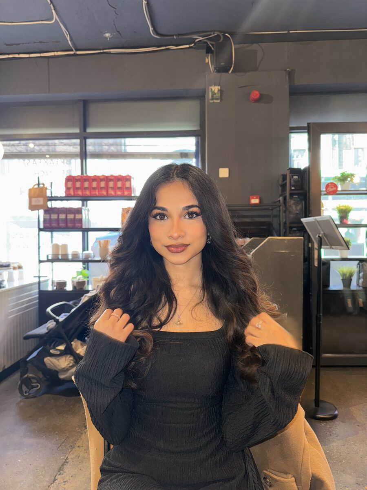
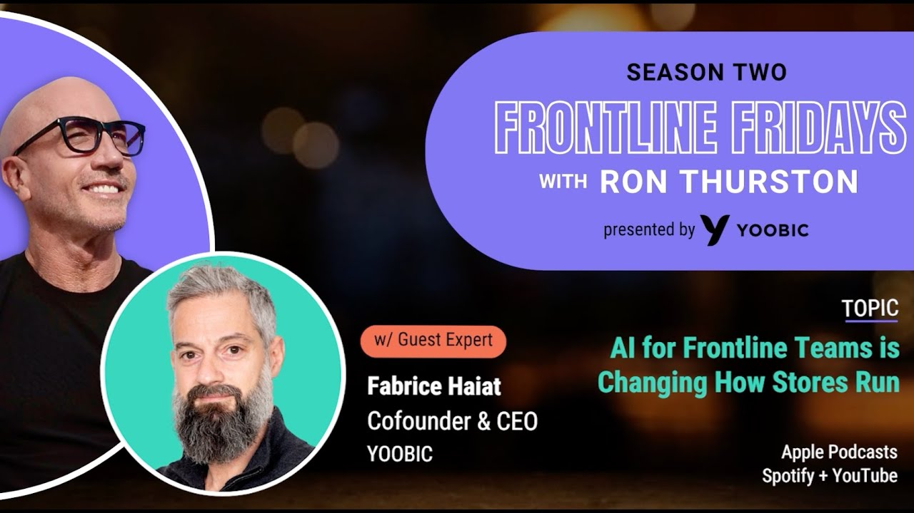
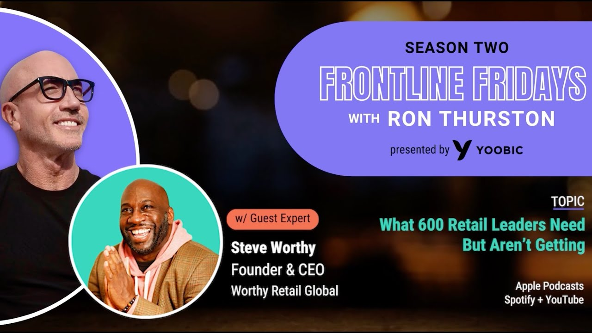
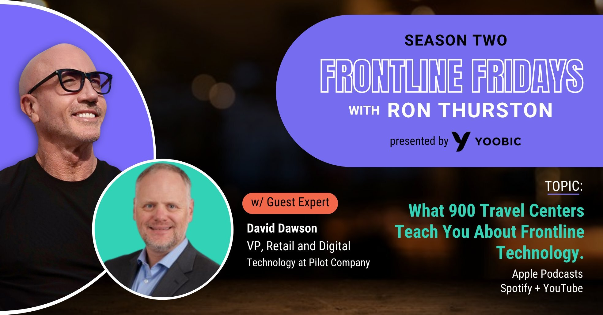
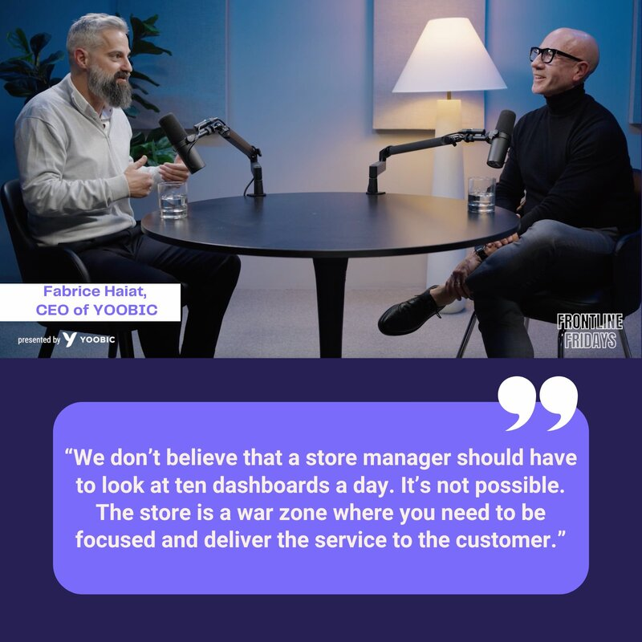
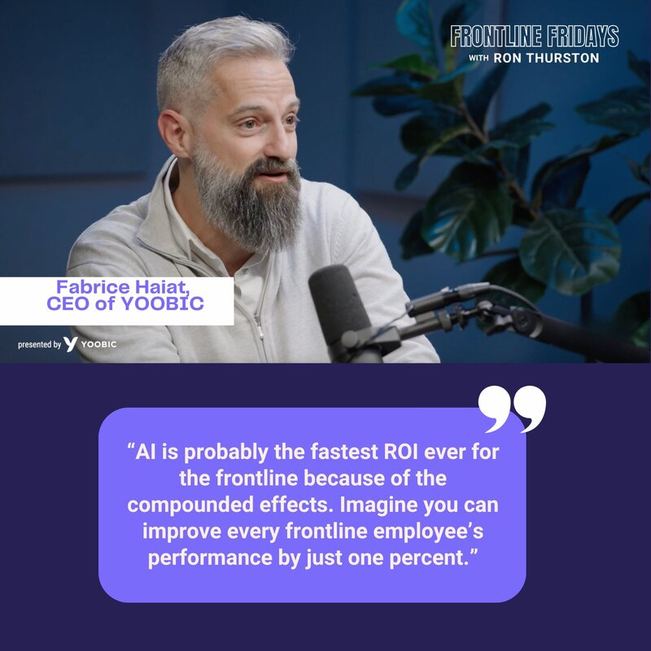
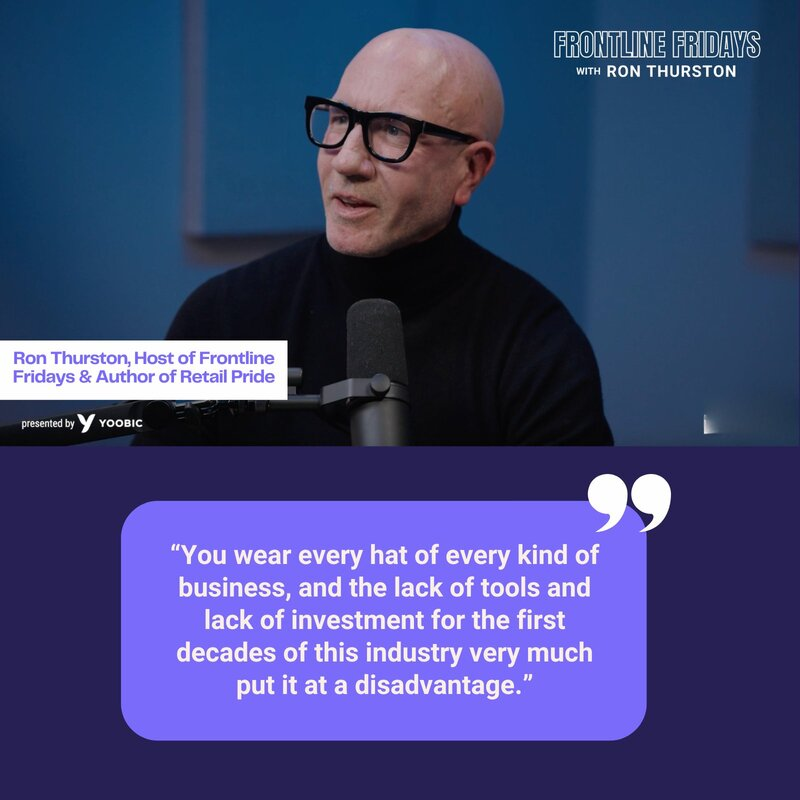

I'm a B2B content and brand marketer. I take messy information — research, data, customer conversations, what AI is saying about an industry — and turn it into things people can actually use. The writing is the obvious part. The real work is deciding what deserves to be written at all.

I've always been drawn to the power of language — not just as a way to tell stories, but as the lens through which we understand the world.
Words can connect or divide, clarify or obscure. For me, writing has always been a way to make sense of that tension. It's how I've navigated education systems, built a voice online, and shaped narratives across my career.
With a First Class BA in American Literature and a Distinction in my Master's in Creative Writing from Royal Holloway, University of London, I bring that same precision and care to my role as Content Manager at YOOBIC. I lead content creation across social, product marketing and campaigns, and I'm currently reshaping our tone of voice to better reflect who we are and how we speak to the world. Before that, I managed social strategy at Papirfly, developed thought leadership content, and helped embed a new brand tone across global teams.
Outside of work, I use my platform to speak about education access and academic inequality, topics shaped by lived experience. I'm also writing a novel, slowly and deliberately, that explores the same themes that underpin much of my work: language, identity, and who gets to be heard.
Whether I'm crafting B2B messaging or a personal essay, I write with one aim: to make things clearer, fairer, and more human.
YOOBIC AEO performance, category-level prompts, US, mid-Mar to late-May 2026. Source: AirOps.
Long-form editorial for senior retail operators. Every piece starts with one question — why should anyone care? — and is built problem-first, grounded in real numbers, with the stakes threaded all the way through.
My flagship editorial for COOs and VPs of Retail, and the clearest example of how I write. It takes something most retailers treat as a routine compliance task and reframes it as a financial lever, built on hard numbers rather than assertion. Declarative, causal, and commercial from the first line.
The cornerstone of the cluster, and the single most-cited page across everything YOOBIC publishes. It's deliberately the most useful, most complete answer on the topic anywhere, structured so both a busy operator and a language model can find exactly what they need.
3,517 AI citations · 17.7% of all citations to YOOBIC.
A second cluster, a second top-cited pillar. Same approach as the task management work: the most complete, most genuinely useful answer on frontline communication anywhere, which is exactly why AI engines reach for it.
1,107 AI citations · one of YOOBIC's five most-cited pages.
The piece where the sociology shows. It reads turnover not as a pay problem but as a question of how the job feels in the first weeks: expectation mismatch, sink-or-swim onboarding, invisible career paths. Human first, evidence throughout.
I was Tone of Voice Lead on YOOBIC's 2025 Brand Refinement programme, authoring the company's first Tone of Voice Guidelines and editorial standards. Defining how a company should sound across hundreds of future pieces is quietly one of the hardest things I've done. It isn't the most visible work. It lasts the longest.
I'm proud of the measurable wins. I'm just as proud of the things that create structure where none existed before.
Before YOOBIC, I owned the entire tone of voice and built the page wireframe for Papirfly's brand hub, and led a company-wide voice repositioning in my first three months. LinkedIn engagement rose 133% in the first quarter.
I produce Frontline Fridays, YOOBIC's weekly podcast, end to end: booking and prepping guests, recording, editing, publishing across YouTube and the website, and building the promotional system around each episode.






I'm YOOBIC's event photographer. It isn't a hobby bolted on, it's evidence of how I work. I'm drawn to visual storytelling as much as written, and comfortable being the person who both shapes the message and captures it.
A true storyteller. Raisa has delivered outstanding results in shaping Papirfly's strategic narrative across social media, and was the driving force behind rolling out a new Tone of Voice and defining how we stand out from competitors. She's an all-round creative and a superb team player who excels in everything she takes on.
An exceptional Social Media Manager who transformed our brand's online presence with creativity and strategic insight. Her talent for balancing linguistic excellence, creativity and data-driven strategies elevated our social performance to new heights. A valuable asset to any marketing team, consistently delivering results that exceed expectations.
Raisa puts her passion into every project. She used her considerable writing and video creator talents to shape messaging that landed with the audiences we were trying to reach — some of it became the most popular content we'd seen. If you're looking for an exceptional candidate, I assure you Raisa will bring knowledge, passion and creativity to your organisation.
Most content fails because nobody answered one question: why should anyone care?
Too many companies start with what they want to say instead of what their audience needs. I start with the problem: why this matters, who it matters to, and what someone gains from reading. At its best, content isn't broadcasting. It's helping someone make sense of something.
Reports, competitors, customer conversations, search, AI outputs. I'm happiest handed something messy and asked to find the thing that matters.
I treat AI visibility as an editorial challenge, not a trick. Become the most useful source available, structured clearly, and the citations follow.
Tone of voice and messaging systems, editorial standards, and a high bar on everything that ships. Problem-first, no filler.
Turning numbers into a narrative a senior operator will act on. Evidence as the backbone, not decoration.
Writing, photography, video, podcast. Not attached to one medium, attached to telling the story well.
Content strategies, publication processes, voice frameworks, new approaches to AI visibility. I like creating structure where none existed.
Brand and messaging strategy, SEO and GEO, long-form editorial, social, podcast, photography, and sales enablement, across marketing, product, sales, and leadership.
Owned tone of voice and brand hub wireframe, led a company-wide voice repositioning, and grew LinkedIn engagement 133% in a quarter.
Global content campaigns and the platform's first interactive content, +300% engagement, across 140+ countries.
Help, blog, and in-app copy for a digital-native audience, shaped by customer data and SEO.
Supported the academic books publication process with authors, editors, and production teams.